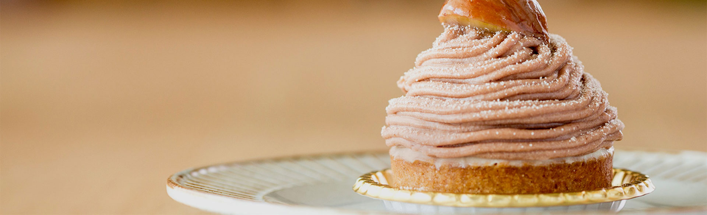
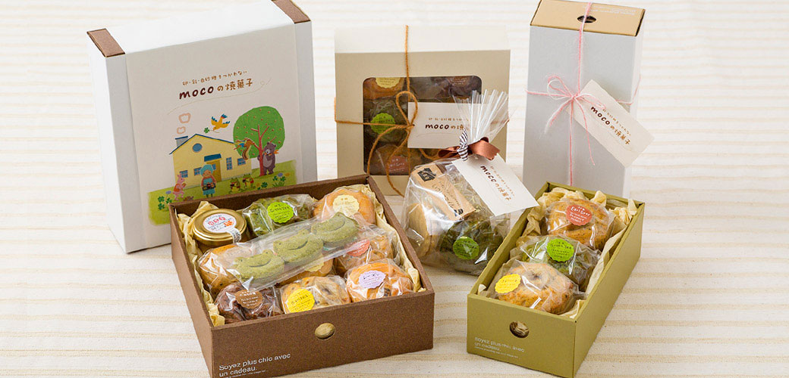

MOCO’S SWEETS
工房販売は、毎週金曜日。
「どれでも好きなのを選んでいいんだよ」 卵や乳のアレルギーをお持ちのお子様に嬉しそうに語りかけるご家族を店頭で見かけるたび、安心・安全なお菓子をつくる責任を感じます。 卵、乳、白砂糖をつかわないお菓子は、市販の材料が使えないことが多いため、一から手作りする必要があり、1回の販売のための仕込みに4日ほどかかります。 そのため、ご不便をおかけしますが、定期的な販売は金曜日のみとさせて頂いております。 毎週ていねいに手作りするクッキーやマフィン、生菓子には、有機栽培や無農薬、減農薬の季節のフルーツや木の実をたっぷりと使用しています。 旬の果物のおいしい時期はとても短くて、中には一週間で終わってしまうものも。 天候によっては、入荷が次の週になったり、入って来なかったりすることもあるので、mocoのおやつは毎週とっても気まぐれです。 工房販売には、美濃加茂市周辺市町村をはじめ、岐阜市や名古屋市など遠方からも多くのお客様がいらっしゃるため、確実なお受け取りにはお取り置きをおすすめしております。 お品書きは、販売前日の夜、ブログやLINE、Facebookでお知らせしています。ぜひご覧ください。
バースデーや記念日のケーキ、季節のフルーツをたっぷりのせたホールケーキのご注文も承ります。
アレルギーでもお誕生日はスポンジのホールケーキでお祝いしたい、mocoならそんな願いをかなえることができます。 ケーキの種類、トッピングするフルーツ、メッセージプレートなど、お客様と打ち合わせをしながらご要望に合わせてお作りしますので、mocoのホールケーキはそれぞれがオンリーワン。 大切な日を迎えるお客様のお顔を思い浮かべながら、一台一台心をこめてお作りしたい、との想いから、オーダーケーキをご相談のお客さまには、できるだけ一度はご来店頂きたく思っています。 フルーツなど材料の仕入れの都合上、お渡しを希望される2週前の水曜日までのご相談をいただけますよう、何卒よろしくお願いいたします。 ご注文は、店主がお渡し可能な日であれば金曜日以外でも承れます。ご注文を受けてすぐ材料の発注をいたしますので、ご注文後の日程変更やキャンセルはお受けできかねます。よくご検討下さい。 お豆腐や豆乳を材料にして作る、卵乳不使用のmocoのスポンジやクリームは、一般的なケーキと風合いが少し異なります。ホールケーキをご検討の際は、カットケーキを一度お試しいただくのがおすすめです。
BAKED SWEETS
卵・乳・白砂糖不使用のmocoの焼菓子は、ギフトにも。
授乳中はなるべく乳製品をとらないようにしたい、そんな希望をお持ちのお母さま方にもmocoのお菓子はとても喜ばれており、ご出産のお祝いにもぴったりです。 ご予算に合わせて、お好みのマフィンやコンフィチュール、クッキーをお選びいただき、お箱に入れて贈答用にラッピングさせていただくことができます。 工房販売のお菓子の詰め合わせは当日店頭でもお請けできますが、混み合った際はお待たせしてしまうと思いますので、お時間に余裕を持ってお越しいただくか、前もってご連絡いただけますと大変ありがたく思います。 また、ギフト以外でも、幼稚園や保育園のイベントでの記念品としても大変人気です。数量の多いご注文はなるべく早めにご相談くださいませ。 クール便送料のご負担をいただきますが、全国への発送も承っております。詳細につきましては個別に対応させていただきますので、お問い合わせフォームよりご連絡をお待ちしております。
VOICE
30代 女性 T様
体調を崩した事がきっかけで、豆腐・豆乳好きになった私。そんな時たまたま見つけたmocoのお店。豆腐や豆乳を使ったスイーツが多く、何より甘さが控えめで素材の本当の味が生かされてる。思わず「美味しい☆」と笑顔がほころびました。 苦手だったクッキーもmocoのは大丈夫！ ちなみに母はマフィン（特にバナナ）が大好きです。 いつも美味しいスイーツをありがとうございます！
30代 女性 W様
授乳中は乳製品を控えているのでケーキ類を食べられず…。でも、たまには食べたい！と思っていた時に、卵・乳製品を使わないmocoさんのお菓子に出会いました。 「本当に乳製品使ってないの？」ってくらい普通のケーキと変わらない満足感。優しい甘さでほっこりした気分になれます。 ケーキの種類も季節に合わせて変わっていくので毎週のお品書きも楽しみ。 マフィンは冷蔵・冷凍保存で日持ちできるのも、とっても嬉しいです。
30代 女性 I様
材料の生産者を提示し、減農薬や無農薬などのフルーツを使ってくださるので、子どもにも安心して食べさせることができます。誕生日ケーキなど、オーダーメイドで作ってくれて、その時々の旬のフルーツから、自分の好きなフルーツを使ってケーキを作ってくれます。 娘にアレルギーがあるため外食できるところが限られるのですが、店主さんがお店なども教えてくれて、とても親切に対応してくださいます。